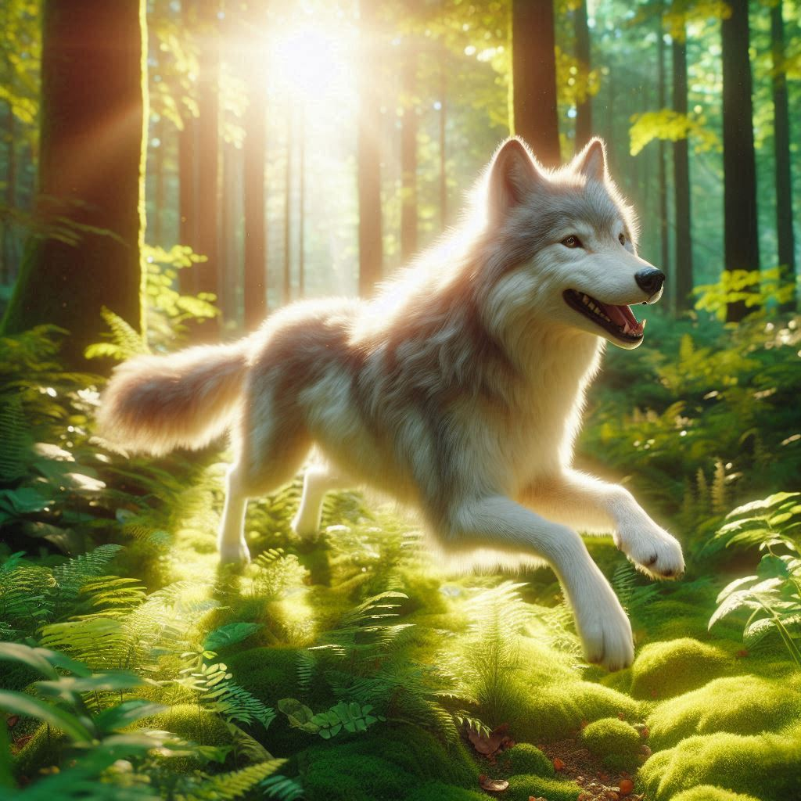

Wölfe spielen gern

Wölfe sind Rudeltiere.
Grösse:60-90cm hoch und etwa 160cm lang
Gewicht: 30-50kg
Nahrung: Fleisch zB. von Rothirshe,Rehe,Wildschweine etc.
Lebensraum: Wald,Steppen,Bergregionen
Lebensdauer: 10-15 Jahre
-Wölfe haben ein wasserdichtes Fell
-Wölfe können eine Geschwindigkeit von bis zu 60km/h erreichen
-Wölfe können über grosse Entfernungen hören
-Wölfe können sehr gut riechen
Wolfsnachwuchs, also Jungtiere, wird im Frühsommer geboren, nachdem die Wölfin rund 63 Tage trächtig war. Die Welpen werden blind und taub geboren, wiegen etwa 500 Gramm und werden von der Mutter gesäugt und vom gesamten Rudel aufgezogen. Das dominante Elternpaar bekommt Nachwuchs und kümmert sich in der Wurfhöhle um die Welpen.
Wölfe spielen gern
Wölfe sind Rudeltiere.